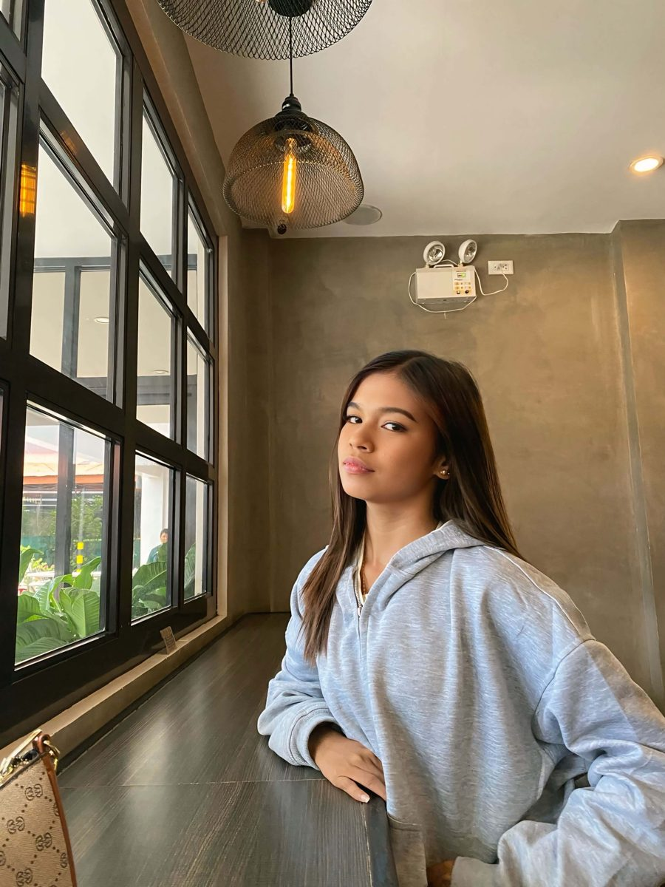

Ferrer,Aid CendyFront-End Developer
I build responsive layoutsintelligent interfacessmooth micro-interactionsuser-centric experiencesresponsive layouts
I pair intelligent tools with creative web design techniques to build sharp, user-centric digital experiences that feel as good as they look.

Design with taste, build with intelligent tools
I treat intelligent tools as creative collaborators, not shortcuts. They speed up exploration, sharpen UI/UX decisions and clear away repetitive work, so more of my time goes into what people actually feel: rhythm, motion, clarity and accessibility.
Projects I’ve designed
Interactive prototypes built in Figma. Open any card to click through the full design.
-
Figma Prototype 01
An interactive UI/UX prototype designed in Figma. Click through the screens to experience the flow.
FigmaPrototypeUI/UXView prototype -
Figma Prototype 02
An interactive UI/UX prototype designed in Figma. Click through the screens to experience the flow.
FigmaPrototypeUI/UXView prototype -
Figma Prototype 03
An interactive UI/UX prototype designed in Figma. Click through the screens to experience the flow.
FigmaPrototypeUI/UXView prototype
Skills I build with
A solid grounding in the core front-end tools, growing with every page I build.
HTML5 & Semantic Markup
Structured, accessible pages that make sense to people and to search engines.
Semantic tagsFormsAlt textCSS3
Clean, responsive layouts that adapt from phone to desktop.
FlexboxGridResponsive designJavaScript
Small, dependency-free interactions that respond to what people do.
DOM manipulationES6 basicsEventsGit & Version Control Basics
Tracked changes, tidy history and safe experiments on branches.
CommitsBranchesGitHub
Let’s build something people remember
Have a project, an opportunity or just a question? My inbox is open.